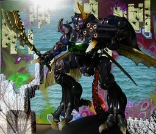

L.O.B. Vol.2 聖戦士ビランビー

バンダイ ロード オブ バイストンウェル Vol. 2 の聖戦士ビランビーです。アニメ聖戦士ダンバインにでてくる「オーラバトラー」の一つで、原型師 竹谷 隆之 氏によるものです。 写真を「造る」作業としては、自分でこうしたいというイメージをして、背景を描き、フィギュアをプラスチックブロックで修飾して、そのプラスチックブロックにフォトレタッチで写真を貼りつけるという工程です。 はっきりいって、全々イメージ通りになりませんでした。 失敗の原因として、フィギュアが思ったより大きく、液晶ディスプレイの画面と同じぐらいの大きさだったのが大きです。あとから構図をいじるというのがやりにくく、そもそも本当はもうすこし右下よりに小さく写す構図にしたかったです。また、今回はじめてプラスチックブロックを前景に使ってみたのですが、フィギュアの大きさにあわせたブロックの配置が予想外に難しかったです。 写真や絵の技術が足りないのはいつものことなので、その点は気にしていません。(爆) 背景などには自分で公園で撮った写真のほか、Winamp の MilkDrop プラグインを WinShot したもの、山本 薫 著の『日本の伝統文様』の中の Kyouko Tanaka 氏の絵を使いました。それらの素材を GIMP で組み合わせています。 初公開：2007年04月10日 00:33:26 最新版：2007年04月10日 00:33:26
Trackbacks: 《片瀬那奈 未成年時代の喫煙フェラ動画！》 from わたしのブログ 片瀬那奈 未成年時代の喫煙画像！ついでにおっぱいポロリ！1999年度の旭化成工業水着キャンペーンガールをしていて現在ドラマやバラエティーで活躍している片瀬那奈のスキャンダルが遂にでた！フライデーに６年前の＜片瀬那奈喫煙写真＞が掲載された。しかも片瀬の友人モ...... 受信： 2007-04-20 15:52:20 (JST) 《どんぐり》 from ジェナさんも 死亡したイラクの ジェナさんも 糖尿病と妊娠 今年 受信： 2007-04-26 10:09:38 (JST) 《くまきりあさ美 那須野巧と熱愛発覚！なんと出会いは王様ゲーム合コン！》 from くまきりあさ美 那須野巧と熱愛発覚！なんと出会いは王様ゲーム合コン！ ◆くまきりあさ美 本名熊切あさ美。１９８０年（昭５５）６月９日生まれ、静岡県出身。９８年にフジテレビgt;「ＤＡＩＢＡッテキ！！」に出演し、番組内でユニット「チェキッ娘」を結成し翌年解散。同７月にユニット「ＭＥＴＡＭＯ」を結成したが、０２年解散。仕事に..... 受信： 2007-05-04 16:35:30 (JST)
Links: バンダイ ロード オブ バイストンウェル: http://www.tamashii.jp/sic/ (hbm) MilkDrop: http://www.milkdrop.co.uk/ (hbm) WinShot: http://www.woodybells.com/winshot.html (hbm) 日本の伝統文様: http://www.amazon.co.jp/exec/obidos/ASIN/4872836847 GIMP: http://www.gimp.org/ (hbm)